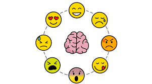

Recursos Socioemocionales
En la materia impartida en elinstituto llamado Colegio de Bachilleres del Estado de Yucatan se intenta inculcar lo que son los valores Humanos tales como la empatia, valentia, Honestidad, Felicidad, Tristeza, Furia, Desagrado, Justicia,
igualmente se intenta indagar en la mente humana, igualmente aprendemos de como llevar nuestras emociones del dia a dia de una forma que nos permita expresarnos libremente y afablamente, de manera clara y sin causar molestias, enojos a las otras personas al igual que respetar y tratar de forma justa tal y como nos gustaria que nos trataran a nosotros, recientemente hemos hecho actividades fuertemente relacionadas a este como el aprendizaje
de como usar los metodos anticonceptivos correctamente, entre ellos el condon y todas sus variantes, igualmente hemos tenido actividades relacionadas a las ferias como la mas reciente que fue la feria del 14 de febrero con el objetivo de mostrar nuestro apoyo a la señorita cobay, la cual necesita el finaciamento para el concurso en el que va a participar, igualmente esta materia sirve para
solicitar datos que necesite la escuela, recientemente se hizo un formulario para llenar un expediente que servira para nuestra graduacion o eso dijieron, el anterior semestre tuvimos esta materia igualmente hubo varias fechas donde esta materia realizo varias actividades para concientizar acerca de los problemas que puede conllevar, tales como el dia del cancer de mama donde tuvimos que realizar un cartel y exponerlos,
haciendo conciencia acerca de este tema y los problemas que puede conllevar, igualmente celebramos el dia de la mujer y se mostraron los peligros que pueden tener las mujeres al salir solas a diferentes areas

Menu